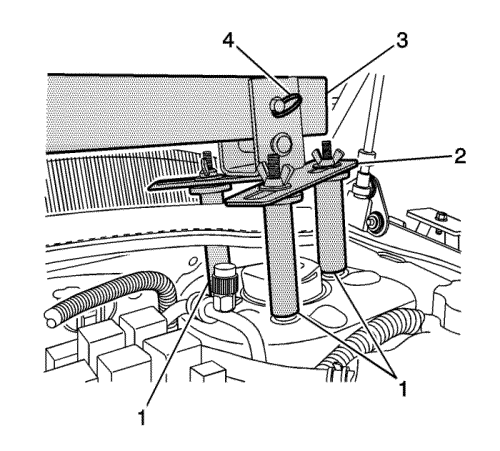
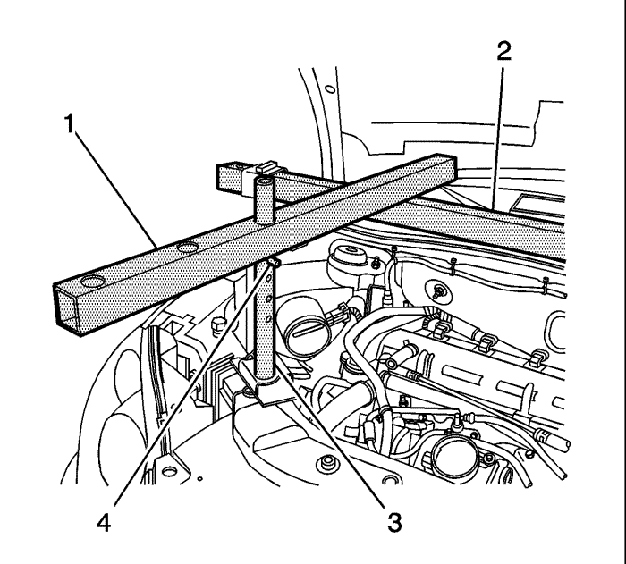
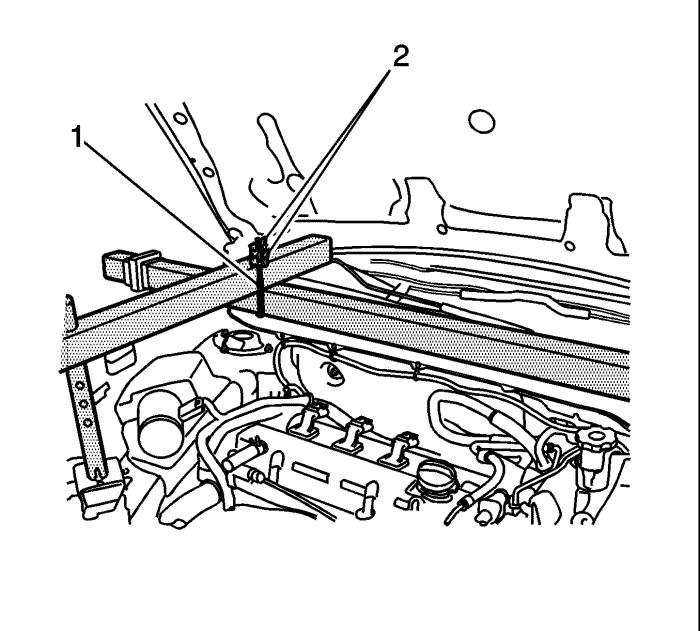
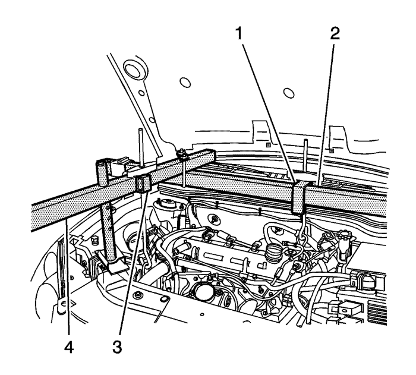
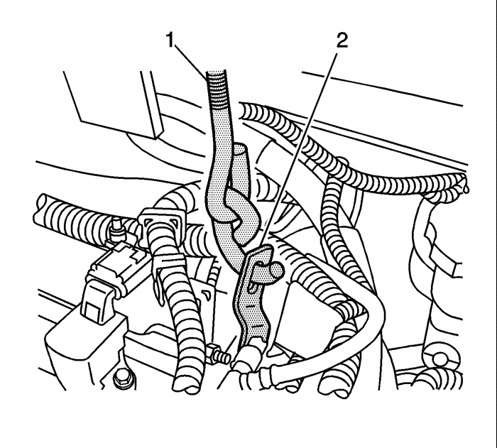
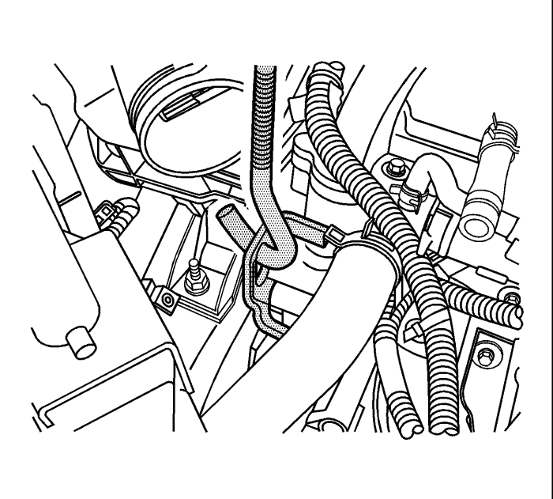

Dispositivo de soporte del motor
Herramientas especiales
| • | EN-28467-B Dispositivo de soporte del motor universal |
| • | EN-28467-13 Adaptador del dispositivo de soporte del motor |
| • | Arandela y tueca con orejas del gancho elevador EN-28467-34 |
| • | EN-36462-A Conjunto de la pata adaptadora del soporte del motor |
| • | Conjunto del soporte J-28467-6A |
| • | Gancho de retención J-28467-7A |
Si desea informarse sobre herramientas regionales equivalentes, consultar Herramientas especiales .
Procedimiento de montaje
- Desmonte la cubierta del colector de admisión. Consultar Sustitución de la cubierta del colector de admisión .
- Use dos pasadores con doble extremo de M8 x 1,25 con un engranaje de 30 mm para la barra de suspensión y un engranaje de 16 mm para los adaptadores de la barra de suspensión EN-28467-13.

- Instale el adaptador EN-28467-13 (1) y el conjunto de soporte frontal J-28467-5A (2) en la parte superior izquierda y derecha de la barra de suspensión.
- Monte la viga de soporte principal J-28467-3 (3) transversalmente a través del vehículo entre ambos conjuntos de soporte frontal J-28467-5A.

- Desde el accesorio EN-28467-B, monte el tubo de soporte del radiador J-28467-2A (1) encima del tubo de la barra de suspensión J-28467-3 (2) encima del soporte del gancho de elevación frontal (extremo derecho) del motor.
- Monte el tubo circular del conjunto de soporte frontal J-28467-4A (3) a través del amplio orificio en el tubo de soporte del radiador J-28467-2A.
- Sitúe el conjunto de soporte frontal J-28467-4A en la barra de acoplamiento superior.
- Monte el pasador de liberación rápida de 7/16 pulgadas x 2,0 pulgadas J-28467-9 (4) a través del orificio superior en el conjunto de soporte frontal J-28467-4A.

- Monte el conjunto de soporte transversal J-28467-1A (1).
- Monte y apriete a mano las tuercas con orejas del conjunto de soporte transversal J-28467-1A (2).

- Monte el gancho J-28467-7A a través del conjunto J-28467-6A.
- Monte la tuerca EN-28467-34 y la arandela en el gancho J-28467-7A.
- Repita los 2 pasos anteriores con el fin de ensamblar 2 ganchos y soportes de elevación.

- Monte uno de los conjuntos de soporte y gancho de elevación (1) a la barra larga del accesorio de soporte del motor (2).
- Monte el otro conjunto de soporte y gancho de elevación (3) al tubo de soporte del radiador J-28467-2A (4) sobre el soporte de elevación frontal del motor.

- Monte el gancho J-28467-7A a través del soporte de elevación trasero del motor (2).

- Monte el gancho J-28467-7A (3) a través del soporte de elevación delantero del motor (4).
- Apriete a mano las tuercas EN-28467-34 (5) para evitar cualquier flojedad en el conjunto del accesorio de soporte del motor.
| © Copyright Chevrolet Europe. All rights reserved |